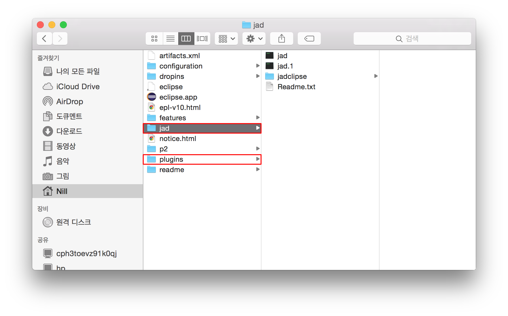

Mac에서 Ecilpse에 Java Decompiler(JadEclipse) 설치
개인적으로 Java개발할 때 없어서는 안 될 JadClise Plugin.
당연히 marketplace에 있겠거니… 하고 검색했는데 없다! 안 나온다! Mac에는 수동으로 설치해야 하나봐 T_T
준비 파일
파일 복사
- JadClipse jar 파일은 ${Eclipse 설치 경로}/plugins 폴더로 이동
- Jad 파일은 압축 해제 후 ${Eclipse 설치 경로}/jad 폴더로 이동
- 2번 Jad 폴더 하위에 jadclipse 폴더 생성
후에 설정 부분에 JadEclipse 임시 파일을 저장할 디렉토리를 지정하는 부분이 있는데, 한 곳에 모아두는 것이 좋을 듯 하여 그냥 Jad 디렉토리 내부에 생성 - Eclipse restart
위 과정을 다 하고 나면 디렉토리 구조는 아래 그림과 같다.

설정
JadClipse 설정
1
Eclipse > 환경 설정 (단축키 ⌘,) > Java > JadClipse
- Path to decompiler (jad 파일 경로) : ${Eclipse 경로}/jad/jad
- Directory for temporary files (Decompile된 파일 임시 경로) : ${Eclipse 경로}/jad/jadclipse (파일 복사 3번에서 생성한 디렉토리 지정)
.class 파일 viewer를 JadClipse viewer로 설정
1
Eclipse > 환경 설정 (단축키 ⌘,) > General > Editors > File Associations
- File types에서 .class 파일 선택
- 하단의 Associated editors 글상자 옆 [Add…] 버튼 클릭
- Editors목록 중 JadClipse Class File Viewer 선택
- 3번에서 추가 한 JadClipse Class File Viewer 선택 후, [Default] 버튼을 클릭하여 기본 editor로 설정